模电第三章 · 轻量版 v2
双极型晶体管及其放大电路基础 · 用于日常学习、复习与做题 · 2026-10-22
本版沿用已确认的“两大部分—各项模块”结构。每个知识点先给主体知识，再接对应的个人理解；手写实际的理解先后用回链保留。课程范围仍为第三章 3.1—3.9，没有加入多级放大电路。
来源约定
- 教材／课件整理：AI 依据实际提供的课本照片、教师课件归纳，非教材逐字引文。各模块注明可回查的页码或幻灯片号。
- AI 补充／推导／例题：为补足条件、连接公式或说明用法而新增，不代表我的原始思考。
- 我的原始理解／原文呈现：直接沿用手写提取档案中的原文段落，保留原有说法、公式、疑问与留白；已有识别不确定项继续标记。AI 整理只用于归属、顺序提示和交叉引用，不代替原话。
- 校正说明：保留原记录，同时说明哪些是合理直觉、哪些需加条件、哪些存在实质性错误。待核对专指尚未确认的原文、归属或资料依据。
完整记录见 手写思路提取，逐页对应与原始疑点见 手写笔记对应表。本版不覆盖这两份档案，旧档案的“待核对”状态也不反写；本次已能解决的技术问题在这里给出校正。
目录
- 一、BJT 部分：定义与结构；工作特点与原理①—⑦；伏安特性与外部特性；等效模型。
- 二、放大电路部分：1 是什么；2 等效及性能参数；3 组成条件与分类；4 基本电路；5 进阶电路；6 直流分析；7 共射交流分析；8 一般步骤；9 共集；10 共基；11 三种组态比较。
- 辅助回查：符号、典型例题、校正与待核对索引、资料依据。
统一符号与本章常用条件｜AI 整理
正文以硅 NPN 管为例，约定 流入管子、 流出管子，。PNP 的结偏置原理相同，端电压极性与通常电流方向反转，不能原样照搬 NPN 的电位不等式。
| 符号 | 含义与使用条件 |
|---|---|
| 静态工作点量，Q 表示无输入信号时的偏置状态。 | |
| ， | 大写下标表示总量，小写下标表示小信号增量；其他量同理。 |
| 与 | 前者用于直流电流比，后者用于 Q 点附近的微变关系。忽略漏电与输出电压影响时，常作 、，不是恒等事实。 |
| Q 点附近基极到发射极的微变输入电阻，不是 。 | |
| 与 | 是管子小信号输出电阻； 是整个放大电路的输出电阻。 |
| ； | 信号源内阻、外部负载；并联等效 。 |
| 本文算例采用的硅管恒压降估算，实际取值随电流、温度和器件变化。 | |
| “中频、小信号、忽略 ” | 耦合／旁路电容在信号频率下可按短路处理，结电容影响可忽略；信号只在 Q 点附近变化；管子输出电阻远大于相关外电路电阻。不同近似要分别判断。 |
主体知识中，结论与适用条件先给出，再解释原因和必要的推导。基础直流算式默认忽略漏电；需讨论漏电时另行说明。
一、BJT 部分
1. 定义与结构
一、主体知识内容｜教材／课件整理
BJT（双极型晶体管）是由三个半导体区、两个相邻 PN 结和三个电极构成的有源器件，有 NPN、PNP 两类。“双极型”表示电子和空穴两种载流子都参与导电。
| 结构 | 名称 | 在正常放大中的作用与结构特点 |
|---|---|---|
| 发射区、发射极 E | emitter | 向基区注入载流子。发射区通常重掺杂，以提高有效注入的比例。 |
| 基区、基极 B | base | 控制载流子的通过与复合。基区很薄，且相对发射区轻掺杂，使大部分注入载流子能通过。 |
| 集电区、集电极 C | collector | 收集通过基区的载流子，并承担较大反向电压和耗散功率；其具体掺杂、面积与结构依器件设计而定。 |
| 发射结 BE、集电结 BC | 两个 PN 结 | 结指相邻不同导电类型区域的交界，不是三个区域各自的别名。 |
这两个结通过同一薄基区发生载流子输运联系，故不能把 BJT 当成任意两只独立二极管的简单连接。E、C 的结构与任务不同，通常不能交换使用而仍保持原性能。符号箭头画在 E 上，指示发射极的常规电流方向：NPN 向外，PNP 向内。
依据：BJT 课件第5—8页。
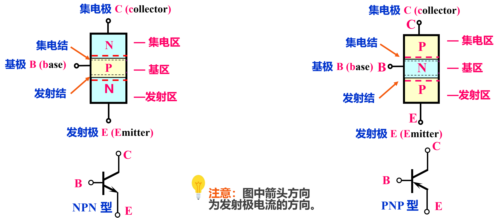
图｜NPN、PNP 的区域、结与电路符号。 取自 BJT 课件第6页。结构图是区域关系示意，不按真实掺杂浓度或几何尺寸绘制。先认清两结的位置，再看 E 上的箭头。
二、我的对应理解
我的原始理解｜hand1-1｜手写部分1/1.jpg

第 3 章 双极型晶体管及其放大电路基础。3.1 双极型晶体管。
定义与结构：
是什么：简称晶体管，是由三层杂质半导体材料（PN 结）组成的有源器件。（又称三极管 / BJT）
基本结构：一个晶体管的结构如下图所示。共有 2 种结构：NPN 与 PNP。
以 NPN 为例：由三个区域、两个 PN 结、三个电极组成。
三个区域为：发射区 E、基区 B、集电区 C。对应的 3 个电极为：发射极 E、基极 B、集电极 C。
3 个区域会形成 2 个 PN 结：E—B 为发射结，B—C 为集电结。PNP 结构也是同理。
2 者的电路符号为：[NPN、PNP 符号与区域示意图见原图]。箭头为发射极的电流方向。
我的原始理解｜hand1-2a｜手写部分1/2.jpg

① 发射区相对基区掺杂浓度很大，以便有足够的载流子供“发射”。
② 基区很薄，掺杂浓度低于发射区，为减少载流子在基区的复合机会。
③ 集电区掺杂浓度低，且结面积大，为吸纳收集发射过来的载流子。
掺杂浓度：发射区 > 集电区 > 基区。
由此观之，BJT（双极型晶体管）的内部结构是非对称的，这也是其拥有放大作用的内部条件。
三、校正说明
原定义中的“三层杂质半导体材料（PN结）”混用了“区”和“结”，主体已分开。原稿“发射区＞集电区＞基区”的掺杂排序保留在档案；学习时应记重掺杂发射区、薄基区等功能条件，不能将该三级排序作为所有工艺结构的通则。回查手写1/1—2及原图。
2. 工作特点与原理
①—⑦保持既定的知识归属顺序。手写中的实际展开顺序另有一条：内部过程 → 电流与两回路反思 → 独立电流判断 → 插入三种连接 → α、β → 电压变化链。以下回链保留这种先后，不把目录本身当成推理。
① BJT 的主要特点——放大作用
一、主体知识内容｜教材／课件整理
BJT 的放大作用是：在合适偏置和外电路下，输入端的小信号能控制输出回路中由直流电源供给的较大信号变化。输出增加的能量来自电源，器件承担控制与能量转换的作用。
在正常放大区，共射模型常用 表示微变电流关系；它不等于“把同一股基极电流复制后送到集电极”。是否有电压、功率放大，还取决于组态、负载和偏置。一个直流电压很大，也不等于其中承载的信息变化被有效放大。
理解时抓住两件事：小变化控制较大变化；输出能量有来源。用晶体管的受控特性配合合适的外电路，才形成实用的放大器。依据：BJT 课件第10—11页、共射课件第4页。
二、我的对应理解
我的原始理解｜hand1-2b-view｜手写部分1/2.jpg
BJT 最主要的特点就是放大作用。
准确来说，是一种控制作用：输入较小量却可输出较大量。以小的输入控制大的输出，如同“放大”。
在输入端用一个小的变化量去控制能源使输出一个大于输入的相应的变化量。
AI 整理｜原稿回链：关于控制关系的继续反思，见 ⑥中的两回路原话。
② 拥有放大作用的条件
一、主体知识内容｜教材／课件整理
正常正向放大要求同时具备内部结构条件和外部偏置条件。NPN 的外部条件是：发射结正偏且有适当注入，集电结反偏，即 、。常用电位关系为 。
- 内部：发射区注入效率高；基区薄、输运中复合损失小；集电区能收集到达的载流子。作用理由接 定义与结构。
- 外部：BE 正偏降低注入势垒；BC 反偏建立收集载流子的电场。过程接 ⑤内部工作原理。
- 形成线性放大电路还要有合适的 Q 点与信号幅度，使整个信号周期内维持预期工作区，而不只是静态时满足偏置。
AI 补充｜条件边界：正偏是电压极性的概念；“电流大到可按导通估算”是电流量级与模型精度的概念。硅管 是常用工作电流下的近似压降，不是正偏的定义。详见 I.3校正。依据：BJT 课件第10—12页。
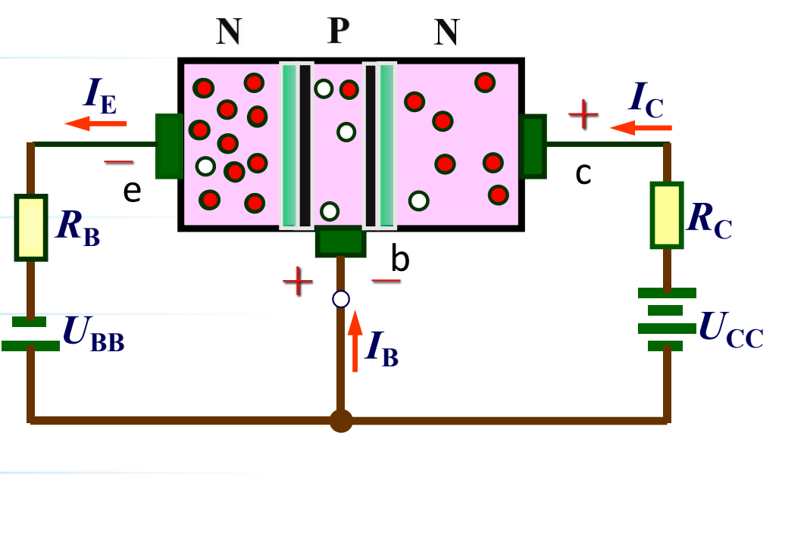
图｜发射结正偏、集电结反偏的偏置连接。 取自 BJT 课件第11页。这里 B 接两个电源的公共端：左回路经过 E—B，右回路经过 C—B，分别建立两结的偏置。此图采用课件的接法；后文固定偏置共射的 B—E、C—E 两回路应看 共射实际连接图，不要混认电阻位置。
二、我的对应理解
我的原始理解｜hand1-2b-conditions｜手写部分1/2.jpg
拥有放大作用的内外部条件：内部：满足对应的物理结构。外部：发射结正偏、集电结反偏。
③ BJT 的不同工作状态
一、主体知识内容｜教材／课件整理
先看两个结的偏置，再选择相应模型。以下为 NPN，；表中“正偏”描述结的极性，明显导通还取决于电压与电流量级。
| 状态 | BE／BC 偏置 | 特点与分析方法 |
|---|---|---|
| 正向放大 | 正偏／反偏 | 有效注入后，大部分电子通过基区被收集；可在限定范围用 。有 。 |
| 饱和 | 正偏／正偏 | 两结均发生正向注入；正常放大区的固定电流比失效。不能继续强令 。 |
| 截止 | 典型为反偏／反偏 | 正向注入很弱，忽略漏电时 。实际工程中的近似截止也可包括 BE 略正偏但电流可忽略的情形。 |
| 倒置放大 | 反偏／正偏 | E、C 的输运作用互换；由于结构非对称，反向电流增益一般远小于正常值，不套正常 。 |
AI 补充｜做题判据：先假设放大区求出端电位，再检验 BE、BC；若算得 ，应检查饱和模型。 是常用深饱和估值，不是“放大区只需 ”的充分判据。临界与估值的区别见 I.3。
依据：BJT 课件第10、33、43页。
二、我的对应理解
我的原始理解｜hand1-3-states｜手写部分1/3.jpg
BJT 的不同工作状态：
① 发射结正偏、集电结反偏时，处于放大状态，对 NPN 来说，。
② 发射结正偏、集电结正偏时，处于饱和状态。
③ 发射结反偏、集电结反偏时，处于截止状态。
④ 发射结反偏、集电结正偏时，处于倒置放大状态。
双极型晶体管在不同的外部条件下表现出不同的特点，其中放大是 BJT 最主要的外部条件。
三、校正说明与待核对
“放大是 BJT 最主要的外部条件”混淆了功能／状态与偏置条件；物理结论可用上表明确，但原句究竟想写“特点”还是“条件”仍由本人确认。回查手写1/3。
④ BJT 的 3 种连接方式
一、主体知识内容｜教材／课件整理
三种组态由信号的输入、输出与公共端决定。“公共”看交流关系，不只看图形位置或哪一脚直接接到画出的地。
| 组态 | 输入端口 | 输出端口 | 公共电极 |
|---|---|---|---|
| 共发射极 CE | B—E | C—E | E |
| 共基极 CB | E—B | C—B | B |
| 共集电极 CC | B—C | E—C | C |
例如 CC 的集电极接理想直流电源，电源的小信号增量为零，因此 C 是交流公共端。改变组态不会改变管内基本的注入、输运和收集机制，却会改变选取的端口及电压、电流关系。性能的计算放在 II.7、II.9、II.10，这里不重复推导。

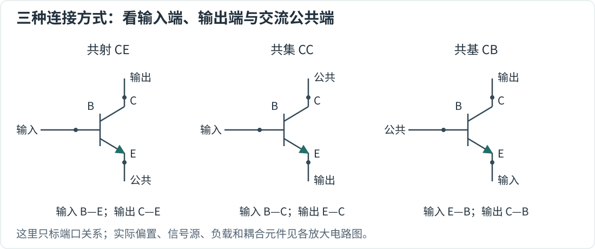
图｜三种连接方式的端口归属。 AI 绘制，依据本节已有端口定义。三个图的晶体管均采用同一符号朝向；“共”指输入、输出共有的电极，不等于该极直流电位一定为零。
二、我的对应理解
我的原始理解｜hand1-6-connections｜手写部分1/6.jpg

此处插入 BJT 配在电路中的 3 种连接方式：
① 共发射极连接：（CE）基极输入，集电极输出，发射极为公共端。即：，。
即我们上述所说的那些，基础都是 CE（共发射极）。当然，基本思想与工作结构是通的，只是输入、输出以及输入与输出的关系变了。
② 共基极连接：（CB）发射极输入，集电极输出，基极为公共端。即：，。
③ 共集电极连接：（CC）基极输入，发射极输出，集电极为公共端。即：，。
综上，可把放大电路看作一个二端口网络，有一个输出端口、一个输入端口。
我的原始理解｜hand1-7-connections｜手写部分1/7.jpg

一个输入回路，一个输出回路。根据输入输出所接极不同，分为以上 3 种连接方式。这 3 种都为放大电路，只是放大的侧重对象（）不同。
AI 整理｜书写顺序：这段在原稿中插入于 两回路与独立电流判断 之后，随后接 α、β。此处只按既定知识模块归类。
⑤ BJT 放大的内部工作原理
一、主体知识内容｜教材／课件整理
以 NPN 正向放大、正常注入范围为前提：电子由 E 注入 B，经薄基区扩散，大部分被 C 收集；少量复合及反向的空穴注入等形成基极电流的重要组成。这使较小的基极电流对应较大的集电极电流。
- 发射与注入：BE 正偏，势垒降低。电子从 N 型发射区注入 P 型基区，同时也有空穴由基区注入发射区。由于发射区相对重掺杂，电子注入通常占主要部分。
- 基区输运与复合：注入的电子是基区非平衡少子，浓度差使其扩散；其中一小部分与空穴复合，基极外电路补充相应空穴。薄基区减少复合损失，使大部分电子能到达 BC 耗尽层边缘。
- 集电与收集：BC 反偏的电场把到达该区的电子扫入集电区。因此，BC 反偏并不意味着集电极没有电流；它收集的是由发射区持续供应、经过基区的非平衡载流子。
AI 补充｜电流方向与主次：电子运动方向 E→B→C，与其产生的常规电流方向相反；NPN 的 通常流入， 流出。除主电子流外，还存在空穴注入、复合及反向漏电，不能用“主要由电子输运”否认双极型含义。 指发射极开路时的集电结反向电流，不能一概归结为“只有少子空穴”。
依据：BJT 课件第12—16页。关于“两种载流子同时注入、反偏结收集”的独立核验，参见 MIT Lecture 17，第4—7页；其电流统一取流入为正，与本文 E 电流取流出为正的记号不同。
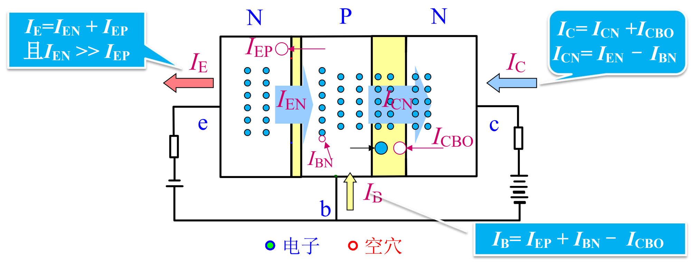
图｜NPN 放大区的载流子输运与电流分配。 取自 BJT 课件第12页。图内蓝色电子箭头表示电子运动 E→B→C，与其形成的常规电流方向相反；端口 流入、 流出。对照正文按“注入—扩散／复合—收集”阅读，漏电与空穴注入仍单独保留。
二、我的对应理解
我的原始理解｜hand1-3-diagram｜手写部分1/3.jpg
放大的内部工作原理：[原图保留 NPN 三个区、载流子箭头、、 的连接。空心点为空穴，实心点为电子。]
原图对照｜我的手写记录（未作技术改图）

图中文字与箭头以原始记录保留；它们不自动代表已核准的知识结论。
我的原始理解｜hand1-4｜手写部分1/4.jpg

① 发射区向基区发射粒子——电子。
由于发射结是正偏的，在 区域中，多子的扩散占主导，则有电子从 ，有空穴从 ，前者形成 ，后者形成 ，电流方向从 P 指向 。
但由于基区掺杂浓度远小于发射结浓度，，近似认为发射极电流 。
② 电子到达基区后边扩散边复合。
由于发射极中 的注入，P 区内靠近 区的 浓度大，靠近 N 区的 浓度小，故 会发生扩散，在扩散途中 也会不断与 复合。为了补充损失的 ，外接电源会向 B 极输送 ，形成电流 ，方向为从基极 B 流入晶体管。
由于基区掺杂浓度低且薄，所以大部分 都穿过基区流向集电区，少部分被复合，故 很小。
③ 集电区收集扩散过来的电子。
对于集电结而言，PN 是反偏的，漂移加强，即电子从 ，空穴从 ，前者形成 ，后者形成 ，电流方向从 N 指向 P。
由于电子数目多且 是由本征激发的少子 形成的反向饱和电流，所以 ，集电极电流近似为 （但 受温度影响大）。
综上，不难发现，晶体管内部有 2 种载流子共同参与导电，但主导该过程的是由发射极发出、经过基区、由集电区接收的自由电子，其为主过程，其余为次。
[蓝笔补记] 故称为“双极型晶体管”。[“发射极”旁另有“区”的改字，保留见影印。]
三、校正说明
原稿“发射结浓度”在此应指发射区的掺杂／载流子浓度；“ 只由少子空穴形成”遗漏了反向电流的其他载流子贡献。两处原始说法保留在 手写1/3—4的完整记录，不替换成我的原话。主电子流的直觉成立，但电流分量近似须说明忽略了什么。
⑥ BJT 的电流关系
一、主体知识内容｜教材／课件整理
电流守恒与正常放大关系。 按本文方向，KCL 始终给出
忽略漏电、处于正向放大区时，直流端口电流比定义为
因此 、。变换的关键中间步是 ，再以 求 。 接近但小于1， 可较大；例如 对应 ，并不矛盾。
微变系数与直流比。 在 Q 点附近，；共基微变系数相应在固定 条件下定义。忽略输出电压的微小影响，才可用同一简化模型写 、，并作 。微变斜率与静态比的含义不同，数值相近时才近似通用。
AI 补充｜“电流控制”与外电路。 是有效的端口模型。在发射极接地的固定偏置电路中， 与 BE 特性共同确定输入状态；集电极电源经 提供输出回路所需能量，并影响 。只有维持放大区、忽略 Early 效应时，才能说 的变化对 影响较小。若 太低使管子饱和，这个结论与固定 β 关系一起失效。
从器件物理看， 改变注入，使端电流共同改变；从外电路看，可选 作为控制变量计算。两种描述服务的层次不同，不需要把其中一种说成虚假的关系。在固定 β、忽略漏电的电流代数模型里，给定一个电流可求另外两个；这不等于完整三端器件仅有一个端口自由度。
适用条件与资料差异｜AI 核对。 课件常直接以端口比定义直流增益；课本照片1，§3.1.5及手写还采用扣除漏电后的定义。需要保留漏电时，本版另记输运系数 ，避免与前面的端口比混用：

这个漏电模型中 一般不再恰等于 ；忽略 时才回到常用近似。 对应基极开路。手写的 与教材常见 是同一漏电记号的不同写法。这里保留定义差别，不把资料中的不同公式无条件拼接。
依据：BJT 课件第35—37页、课本照片1—2，§3.1.5。

二、我的对应理解
我的原始理解｜hand1-5｜手写部分1/5.jpg
电流关系：
且由 KCL 可得：。
简画一个基本的 BJT 电路图：[见图 5]。在使用 BJT 时，一般将 作为输入， 作为输出，认为由 对 进行放大控制。
但这个是一种人为规定的便于使用的关系，接下来进行解释：
由图可知，该图可以看作由 2 个网孔构成： 与 ，B 网孔的网孔电流为 ，C 的为 ，而 （2 者交汇处）。整个电路外接了 2 个重要电源： 与 。
其中， 为正偏电压，其大小决定了主过程电子的多少，影响 的大小；而 为反偏电压，其大小几乎不会影响 3 个电流的大小，其负责提供能量。
故而不难看出，B 回路可显著影响 C 回路，C 回路却无法显著影响 B 回路，故自然而然地看作 B 控制 C。当然，实际上是由 控制 与 ， 与 是一个整体，本身无控制关系，但由于内部结构规律， 与 有固定关系，即 （ 为放大倍数）。
为了方便，用 控制 来代替 B 回路控制 C 回路，B 回路为输入回路， 为～；C 回路为输出回路， 为～。
原图对照｜我的手写记录（未作技术改图）

图中文字与箭头以原始记录保留；它们不自动代表已核准的知识结论。
我的原始理解｜hand1-6-current｜手写部分1/6.jpg
这个电路看似是有 2 个独立网孔、2 个独立电流，但 与 有关联，，故这个电路实际上只有 1 个独立电流变量。
AI 整理｜原稿顺序提示：在上一段与下面的系数之间，原稿插入了 三种连接方式。
我的原始理解｜hand1-7-coefficients｜手写部分1/7.jpg
分配关系 / 放大关系系数：
① 共发射极直流电流放大系数 。即在共发射极下，输出电流与输入～的关系：
（一般在 20～200 之间）。[蓝笔] 描述了基区中非平衡少子的扩散和复合的比例。
② 共基极直流电流放大系数 。此时发射极输入，集电极输出。
[原稿另写“一般在……之间”，该范围末两位字迹为【原文待核对】；不替换成教材常见值。]
且 ，。
均与 BJT 的基区宽度、掺杂浓度、发射区的掺杂浓度等有关。换言之， 是晶体管本身的特性，由 BJT 的内部物理组成与结构决定。
三、校正说明与待核对
- 需补条件的直觉：“ 几乎不影响三电流”“固定 β”“一个独立电流”可用于上面的简化模型，不能推广到所有工作状态。
- 需限定的物理类比：扩散与复合的相对大小确实影响增益，但真实基极电流还包括空穴反向注入等，不能把端口 β 精确等同于“扩散电子数／基区复合电子数”。手写的分量比与漏电近似仍保存在原档案。
- 原文待核对：α 常见范围的末位数字没有可靠辨认。本版不填造该原句；做题按已给系数计算。
⑦ BJT 的电压放大原理
一、主体知识内容｜教材／课件整理
在发射极交流接地、维持放大区的共射电路中，集电极电阻把电流变化转换为输出电压变化。空载时
若输入端电压就是小信号 ，则
结论先抓住：电流受控变化，经负载转换成电压变化；共射的集电极输出反相。输入使 增大 → 增大 → 压降增大 → 集电极电位降低。带交流负载时，应把 换成 ；输入若指电源电动势，还要计入 的分压，详见 II.7。
依据：课本照片10—11，印刷页73—74、共射课件第28—32、57页。

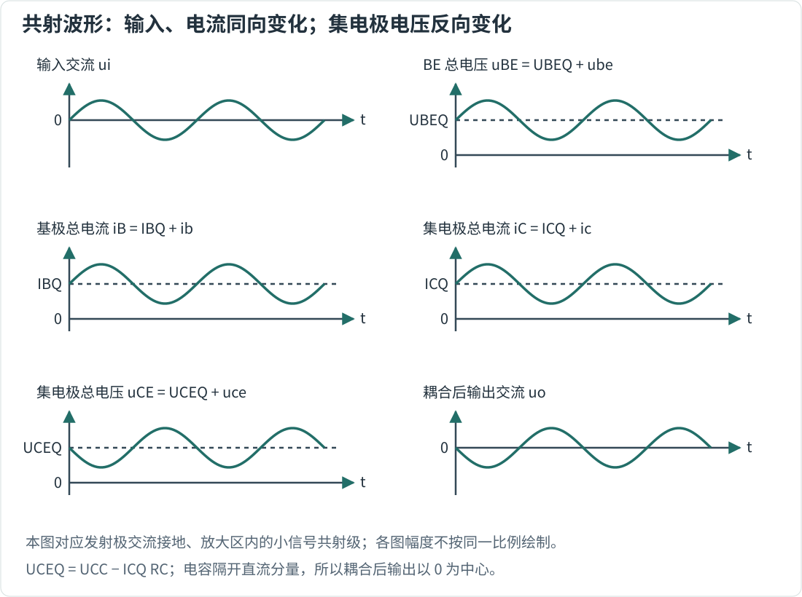
图｜共射电压放大的各处波形与直流背景。 AI 依据本节变化链及 共射课件第30页 重绘，电路连接见 基本共射图。各时间轴起点对齐： 上升时各电流上升， 和 下降。课件原图左侧将 的直流基准标为 ，与所画端口不符；本图明确采用 。这项图示校正不改写个人原稿。
二、我的对应理解
我的原始理解｜hand1-8｜手写部分1/8.jpg
对于一个共射极放大电路：[见原图上半]。
如图，如果在输入回路中加入微小的输入信号 ，此时接在发射结两端的正偏电压 改变，。
则 增大，根据 PN 结正偏的伏安特性曲线可知， 对 有很强的控制作用， 增大，会引起 变化较大 → ，引起 ，进而引起 的较大变化 。集电极上的负载电阻 把 转换为较大的输出电压变化量 。
由 ，实现了电压的放大。可知：共射极电路既有电流放大能力，也有电压放大能力。
准确来说， 增大，载流子 增多，进而引起 同步增大。
对于一个共集极电路：[原稿此处确写“共集极”；电路图见下半，保留原题注，不在引文中改名。]
也是同理。。从 ，实现了电压放大。
原图对照｜我的手写记录（未作技术改图）

图中文字与箭头以原始记录保留；它们不自动代表已核准的知识结论。
三、校正说明与待核对
原稿写 。若指幅度可以取正；若指集电极相对地的带符号变化，应为负号，原因是电源电压不变时 压降与集电极电位一增一减。原式不从档案删除。
下半图题注写“共集极”，接法及 α 链却与共基分析相近；技术上可按端口判断，但当时原意仍待本人确认。不据此伪造一段已经完成的共集推导。回查手写1/8原式与两图。
3. 伏安特性与外部特性
一、主体知识内容｜教材／课件整理
输入、输出特性是在固定另一变量后观察的关系。 对共射端口，可选 四量描述：
| 特性 | 固定条件 | 研究关系 | 用途 |
|---|---|---|---|
| 输入特性 | 固定 | 判断输入注入与非线性、求静态输入状态及局部斜率。 | |
| 输出特性 | 固定 | 每个 对应一条曲线；曲线族用于判区、负载线与失真分析。 |
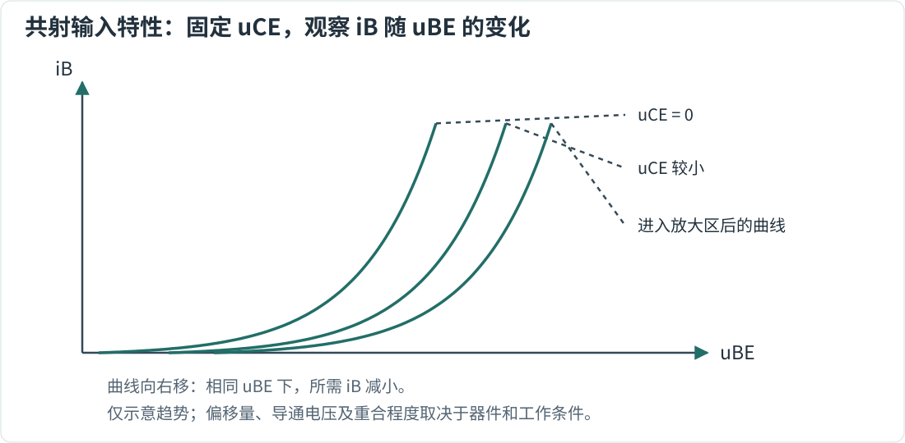
图｜共射输入特性曲线族。 AI 依据 BJT 课件第29—30页 重绘趋势示意。每条曲线固定一个 ；图无器件数值标定，不能据横向位移读出统一阈值。原课件叠加的动画标注改为分开标注，未新增实测数据。
输入特性的理解。 BE 是 PN 结，输入曲线与正向二极管曲线相似，但 BJT 还有集电结的收集作用。比较不同 的曲线，必须保持输入特性所规定的条件：在相同 下，集电结状态会影响基区输运与所需基极电流。进入正常放大区后，常近似选一条输入曲线使用；不能说任意 都完全无影响，也没有适用于所有管子的固定分段值 。
输出特性与工作区。 在放大区，固定 的曲线较平坦，体现近似恒流特性；低 处进入饱和，固定 β 不再成立； 时对应近似截止曲线，但仍可能有漏电；过大反向电压会进入击穿，超出本章普通线性模型。
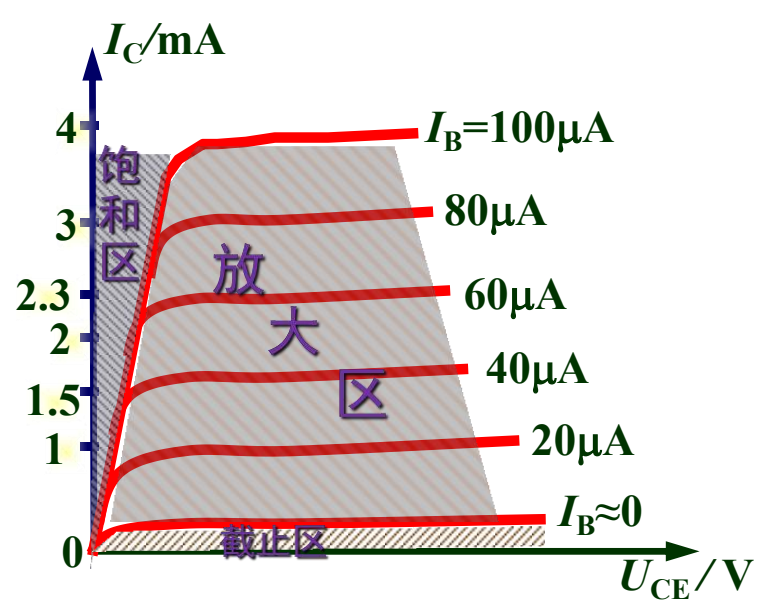
图｜共射输出曲线族与常用工作区。 取自 BJT 课件第33页 的曲线部分。每条曲线固定 ，不同曲线构成族；图中数值为课件示例。阴影分区为示意，严格结偏置边界与饱和压降估值须按下文区分，不从阴影宽度读取固定边界。
AI 补充｜为什么曲线并非绝对水平。 BC 反向电压增加，使耗尽层向基区扩展，中性有效基区变窄，载流子输运随之改变，这称基区宽度调制或 Early 效应。不是“整个集电区变宽”。本章通常忽略这种较弱影响；需提高精度时，用有限 表示输出曲线斜率，不必在此加入完整精细器件模型。
工作区边界与压降估值。 对 NPN，；当 BC 从反偏到零偏时，，这是按结偏置划分的临界边界。进一步正偏可进入饱和。题目给的 （常以 估算）描述选定饱和工作条件，不能与边界电压混为一谈。饱和时不是“输入怎样变都无法影响输出”，而是不再服从正常放大区的固定 β 比例。
外部参数、温度与选管。 下面是本模块做题需要的外部特性定位；增益系数见 ⑥，模型参数见 I.4。
| 项目 | 应掌握的内容与条件 |
|---|---|
| 电流增益、漏电 | α、β 依工作点、温度、器件而变；、 要区分开路端条件。 |
| 电流、电压、功耗限制 | 、相应端接下的击穿电压、 分别约束工作；直流管耗常估 。不能同时取各个最大值仍认定安全。 |
| 击穿电压记号 | ：E 开路；：B 开路；：C 开路。条件不同，数值不能互换。 |
| 温度影响 | 在给定电流附近，温升通常使所需 降低；固定 时，电流通常增大，漏电也会增大。β 的变化还受器件、工作区间影响，不作为无条件统一上升规律。 |
| 选管 | 先满足极性、工作电压、电流、功耗与散热、安全工作区，再满足所需增益与频率。最终以对应器件数据手册及实际条件为准。 |
依据：BJT 课件第28—41页、课本照片1—4，§3.1.5—3.1.7。

二、我的对应理解
我的原始理解｜hand1-9｜手写部分1/9.jpg

伏安特性曲线。晶体管有 3 个极，为了描述其电学特性，我们用 2 个伏安特性，输入伏安特性与输出伏安特性来描述。
普通的二端器件，有 2 个参数： 与 。对于三极管，则有 4 个：。
① 输入特性曲线。描述在 一定的情况下， 与 的关系。即 。
1）。此时集电极与发射极短路，集电结不收集 ，整个 BJT 类似于一个 PN 结： 时，截止，； 时， 与 关系近似于 PN 结。
2） 时。来说明一下此时 的影响，在该区间内，，会使基区变窄，集电区变宽（基调效应），进而使在基区的复合概率下降，使得在 相同的情况下 略变小， 略变大（也就是影响了分配关系 ）。
3） 时。当 大于一定电压值时，基区大部分 都进入了集电区， 的改变不再对 有明显的影响。
[保留原图：横轴 ，纵轴 的单位字迹【原文待核对】；三条曲线标 、、。]
我的原始理解｜hand1-10｜手写部分1/10.jpg

综上，若 固定， 与 的关系有类似 PN 结的特性，即： 时，截断； 时， 随 增大呈指数增长关系。
而 对 的影响：（某一值）时，随着 ， 略有 ↑； 时，对 无影响。
② 输出特性曲线。描述的是 为常量时， 与 间的关系。即 。
对于每个 都有一个对应的特性曲线 ，故而输出特性是一簇曲线。
而对每一条曲线而言：当 从 0 逐渐增大时， 随之增大；到 达到一定值后， 不受 影响；当 过大时，会引起集电结反向击穿， 剧增。
接下来阐述放大、饱和、截止 3 大工作状态。[图中的放大区、饱和区、截止区、击穿区与曲线族均保留在影印页。]
我的原始理解｜hand1-11｜手写部分1/11.jpg

1）放大区。条件：此时发射结正偏（），集电结反偏（）。特征：此区域内， 几乎只受 影响，对于给定的 ， 特性曲线在放大区内趋于水平。
2）饱和区。将各条输出特性曲线的上升区域称为饱和区。
条件：发射结正偏（），集电结也正偏（）。
特征：由于集电极处正偏，接受 的能力很小，也因此 会变小。且在此区域， 的变化难以引起 变化，也即 无法控制 （因为此时影响 的主因是 ）。[蓝笔] 处于饱和区时， 绝对值很小且几乎不变，称为饱和压降，记作 。
临界饱和： 时，处于临界饱和状态。
3）截止区。 时对应的区域称为截止区。条件：发射结反偏（），集电结也反偏（）。
特征：无法发射，无法接收，无论 如何变化， 都近于 。[在“无论”旁加注：在该条件下。]
注：在前面我们就将其认为 即发射结正偏，实则 才是正偏，正如 PN 结一样， 时 很小，认为此时未导通， 时才认为导通。
三、校正说明与待核对
上述补注把偏置极性与电流达到明显导通量级的近似门槛混为一谈。原来以 判断 NPN 的 BE 正偏，极性意义上成立；后来的补注并非更准确的定义。应保留“电流很小时工程上可按截止处理”的直觉，修正“超过开启压降才叫正偏”的判断。饱和“无法控制”、截止“无论电压怎样”等绝对化说法，也都需限定工作区与击穿前提。
输入曲线纵轴单位字形和 的原稿意图仍待核对，不凭惯常单位、课堂常见数值反填。上述主体结论不依赖猜出这些字迹。
4. 等效模型
一、主体知识内容｜教材／课件整理
模型保留指定范围内的端口关系。 直流模型用于求 Q 点、判工作区；小信号模型用于已知 Q 点附近的增量分析。它们不是两只不同的晶体管，而是对同一非线性器件、不同任务与精度的表示。
直流分段模型。 忽略漏电并采用恒压降估算时：
| 状态 | 常用模型 | 使用与检查 |
|---|---|---|
| 放大 | BE 取给定 ，C 回路用 的受控电流源 | 先计算，再验 BE 导通且 BC 反偏。 |
| 截止 | ，相关导电通路近似开路 | 忽略漏电且未击穿；不是精确零电流断言。 |
| 饱和 | 取题设 与 ，由外电路求电流 | 不再强加 ；电流比可作为受迫 β，而非管子放大区增益。 |
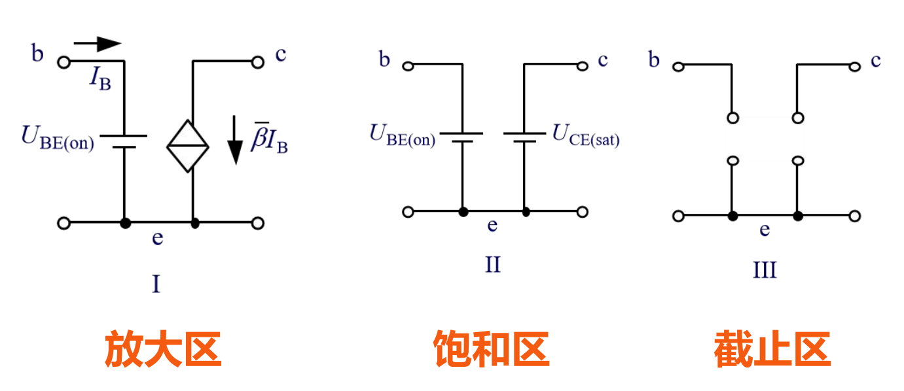
图｜放大、饱和、截止的简化直流模型。 取自 BJT 课件第43页。从左到右分别是放大、饱和、截止；原图直流增益记 。受控源只在放大模型中使用固定电流比例；饱和模型中由端压估值和外电路求电流。
交流小信号模型。 条件是 Q 点在放大区，信号足够小，使局部曲线可用切线近似。低频简化模型为 B—E 间 ，C→E 方向的受控源 ；忽略输出电导及很小的反向传输时，
微变电流可以为负，表示相对 Q 点减小；不表示总电流已经反向。画受控源要保留其参考方向与控制关系，求 时也不能随意去掉它。
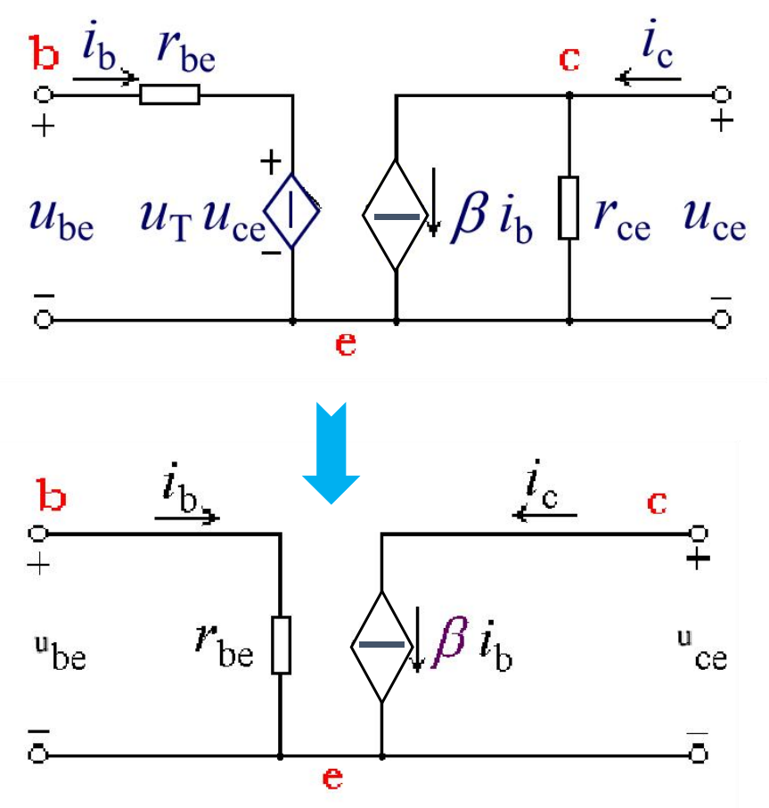
图｜完整低频 H 模型到常用简化模型。 取自 BJT 课件第100页。上图保留反向电压传输项和 ，下图忽略二者；原课件 对应本文管子输出电阻 。图中反向传输系数不是热电压 。下图的 与受控电流源必须共同保留，受控源箭头从 C 指向 E。
AI 补充｜参数从哪里来。 在正常注入、忽略 Early 效应的近似下，。对内基极电压求 Q 点斜率：
令内基极小信号电阻 ；若保留基区体电阻 ，则
最后一式用了 。 随 Q 点变化；不能先用它求 Q 点，再反过来声称无需直流分析。 取题给值，没给且允许忽略时才删去，不固定为某个通用常数。若使用跨导源，应写 ；只有忽略 时，才可直接把内基极电压换成外端 。
适用条件与进阶补充｜AI 整理。 指数关系的二阶项相对一阶项约为 ，因此“小信号”与局部变化相对 的大小有关，不能仅凭电源电压的百分比判断。较大信号及接近截止、饱和时改用非线性／图解分析。
完整 H 参数式是 、；简化时取 、，忽略 和 。若保留输出斜率而忽略反向传输，可用 表示；这不是任何带反馈电路的 都直接等于 的理由。
依据：BJT 课件第43、94—104页、课本照片5上部，模型参数续页。

二、我的对应理解
我的原始理解｜hand1-12｜手写部分1/12.jpg

晶体管的等效模型。
首先，晶体管在电路中有 4 个参数：。
其次，BJT 在直流、交流状态下表现出不同特征，故分为直流模型与交流模型。
第三，BJT 有 3 种工作状态：放大、饱和、截止。但 BJT 本就用于放大信号，故只讨论放大状态下的交流模型。
最后，什么是等效、如何等效？在电路中的等效，就是保证电路特性即在电路中的作用不变的前提下，把复杂的陌生的元件变成简单的、熟悉的元件的组合。故而先求得电路特性，再用基础元件像拼装积木一样组合。
1．直流电路模型。
1）放大状态。 固定，为 ； 受控于 ，。[原图：B—E 电压源、C—E 受控电流源。]
2）饱和状态。 不受 控制。 绝对值小且几乎不变，近似为 。 固定。[原图：两个给定压降。]
原图对照｜我的手写记录（未作技术改图）
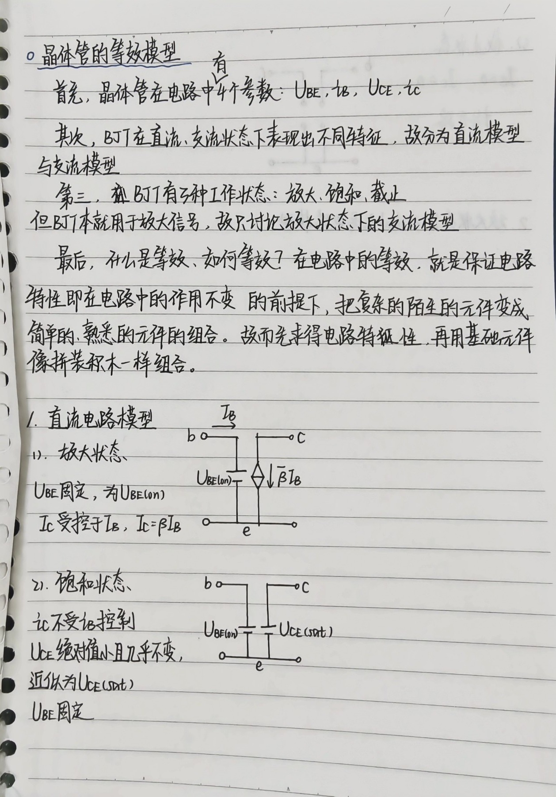
图中文字与箭头以原始记录保留；它们不自动代表已核准的知识结论。
我的原始理解｜hand1-13｜手写部分1/13.jpg
3）截止状态。，。均开路。[原图保留三个端点的开路模型。]
2．放大状态的交流小信号电路模型。
[该标题下原稿留空。后面的模型和推导来自 AI 补充，不作为原稿复原。]
原图对照｜我的手写记录（未作技术改图）

图中文字与箭头以原始记录保留；它们不自动代表已核准的知识结论。
三、校正说明与记录边界
原稿“3种状态”对应这里常用的放大、饱和、截止模型，不取消前文记录的倒置放大状态。原稿小信号部分只留标题；本节参数推导属于 AI 补充，不是手写已经完成的理解。原图中的连接与原式保留，模型使用以本节主体的状态条件为准。
二、放大电路部分
1. 放大电路是什么？
一、主体知识内容｜教材／课件整理
放大电路是在能源供给下，用输入信号控制输出，使其按预定关系增强并保持所需信息的电路。本章讨论有合适偏置的 BJT 线性放大电路，主要分析 Q 点、信号传输及负载能力。
在小信号范围，常以 描述电压变化； 可以为负，表示反相。衡量效果既要看增益，也要看失真、信号源被加载多少、能否向负载提供所需信号。仅有直流电源、仅有放大管，或某个节点电压较大，都不足以说明电路能正常放大输入信号。
AI 补充｜与器件层次的区别：I 部分讨论“管子为何有受控特性”，II 部分讨论“怎样用偏置、负载和信号通路把特性组织成电路”。这是本版的知识定位，不冒充原稿已写出的全章推理。
依据：课本照片5，印刷页68、共射课件第4—5页。
二、我的对应理解
我的原始理解｜hand2-1-transition｜手写部分2/1.jpg

BJT → 放大电路。放大电路。
2. 放大电路的等效及性能参数
一、主体知识内容｜教材／课件整理
二端口电压放大器模型。 在近似单向传输、中频线性范围内，输入用 表示负担；输出用受输入控制的戴维南电压源与串联 表示。这个模型保留端口关系，不能代替实际偏置电路来求管子的 Q 点。
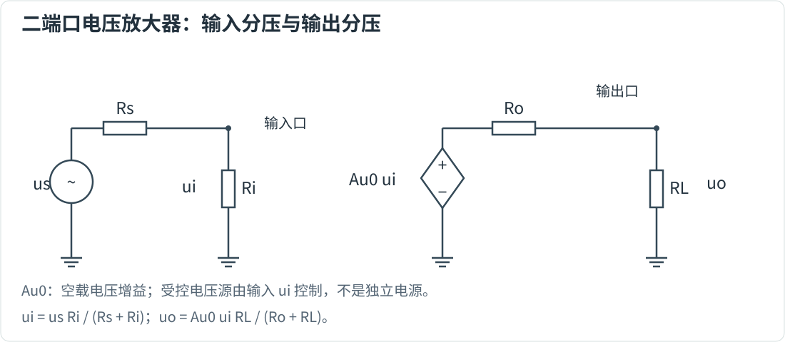
图｜信号源—放大器二端口—负载。 AI 绘制，依据本节的单向电压放大模型。输入支路与受控输出支路由控制关系相连，不画成一条直通导线； 是空载增益，带载增益须再计输出分压。
增益及源内阻。 以 为放大器实际输入端电压、 为接好指定负载后的输出电压：
不要把 与 混为一谈。输入端对电压源的加载越小， 越接近 ；这是电压信号传输的判断，不能无条件推广为所有电流源系统的选阻原则。
若输出模型的开路增益为 ，接电阻负载后
例如等效开路输出为 、，负载电压只有 。 体现输出被负载拉低的程度。
输入电阻。 ，电流取流入放大器输入端。它由指定输出端接、偏置与频率下的输入关系定义；不是某只偏置电阻的别名。较大 通常有利于从有内阻的电压源取得电压。
输出电阻的测试。 去掉 ，使独立输入信号源置零，保留源内阻和所有受控源；在输出口加测试源，得到
独立电压源置零为短路，独立电流源置零为开路；电源是小信号置零，不是改变原 Q 点。信号源内阻 有时影响结果，如 共集电路。不能用工作时的 求 ，因为当 时，这个比值只是 。
其他常用指标。 输出电流取流向负载，电阻端口、中频实增益下：
相量增益用 描述幅度、相位描述同反相；电压增益的分贝数为 ，功率增益用 。幅频特性的中频参考增益下降至 对应约 ，上下限频率之间为常用通频带。失真则描述输出偏离预期波形的程度；非线性失真接 II.7。这里保留指标定位，不扩写完整频率响应章节。
依据：课本照片6—7，印刷页69—70、共射课件第9—18页。测试法及各式端口条件由 AI 补充说明。

二、我的对应理解
我的原始理解｜hand2-1-model｜手写部分2/1.jpg
1．等效模型与参数。等效为一个二端口网络。
输入端口：等网络等效为一个电阻。输出端口：网络等效为一电压源 + 一电阻。[图中保留 与电压源的端口示意。]
类比二端网络，重于 的关系，从而使用简单元件等效该 关系。二端口网络重于输入与输出的关系，也可用 easy 元件等效其关系。
参数：① 增益 。
② 输入电阻 ，，反映了……
③ 输出电阻 ，，反映了……
[旁注] 未懂。
三、尚未解决的原记录
原稿 后的“反映了……”未填，“未懂”旁注的具体指向也不明确。本节主体提供了物理意义与正确测试条件，但不据此声称当时已经想通。回查手写2/1等效图、参数与旁注。
3. 放大电路的组成条件与三种组态和 2 种主要电路
一、主体知识内容｜教材／课件整理
本章普通线性放大电路需要：器件工作状态合适；直流偏置能建立 Q 点；输入信号能改变控制端状态；输出回路能将变化传给负载；信号范围内不发生不可接受的失真。
组态与偏置方式是两条不同的分类轴：
| 分类轴 | 本章保留的内容 | 不应混淆的地方 |
|---|---|---|
| 三种组态 | 共射、共集、共基 | 按信号端口与公共端划分，见 I.2④。 |
| 两种主要电路 | 共射基本电路：固定偏置；共射进阶电路：分压式电流负反馈偏置 | 是本章所研究的两类共射实现，不是三种组态之外另加的组态。 |
固定偏置用电源与 建立基极电流，结构简单，但 Q 点易受 β、温度等影响；分压式以 建立基极电位，配合 稳定静态电流。旁路电容改变交流反馈程度，直流时开路，因而不另改其直流分类。
依据：课本照片8—9，印刷页71—72、共射课件第5、47—50页。
二、我的对应理解
我的原始理解｜hand2-1-conditions｜手写部分2/1.jpg
2．放大电路的组成条件与三种组态（类型）。条件：[原稿空白]；组态：[原稿空白]。
4. 基本电路的组成与工作原理
一、主体知识内容｜教材／课件整理
电路组成。 以双电源固定偏置 NPN 共射电路为基本参照：E 接地，B 经 接 ，C 经 接 ，输入通过 加到 B，输出由 C 经 送给 。

图为既有 AI 示意，电气连接按本段定义；原始教材电路可 回查课本照片9—10。

| 元件 | 作用 |
|---|---|
| BJT | 利用放大区的受控特性。 |
| 建立 BE 正偏和适当 ； 也限制基极电流。 | |
| 为输出回路供能； 把电流变化转成电压变化，并参与决定 Q 点与摆幅。 | |
| 耦合信号、隔离两侧的直流偏置；在所分析频率下容抗足够小时才近似短路。 | |
| 外部实际负载，通过耦合电容参与交流分析，通常不参与直流 Q 点计算。 |
单电源形式把 上端也接到 ，此时才可在双电源算式中取 。只换电源而不重新选择参数，不保证 Q 点相同。
先静态，再在静态上叠加变化。 无信号时求得 ；输入信号到来，器件工作在它们附近：
空载、E 接地时，；带负载的中频增量为 。 隔开集电极的直流电位后，负载上的信号 。所以集电极总电压有直流与交流，负载输出可只有交流，两者不能用同一个无说明的 混写。
AI 补充｜电容不是万能“过滤器”。 稳态下电容隔离直流；对交流仍有 ，低频时会引入衰减和相移。这里的“输入、输出为交流”特指本章电容耦合电路；其他放大器可采用直接耦合。
依据：课本照片9—12，印刷页72—75、共射课件第21—37页。

二、我的对应理解
我的原始理解｜hand2-2a｜手写部分2/2.jpg
共射极放大电路。1．电路组成。总图：——[原稿留空]。
各元件作用：① NPN 晶体管；② 与 ；③ 与 ；④ 与 。
我的原始理解｜hand2-2b｜手写部分2/2.jpg
2．工作原理。先只直流，此时电路中各量不变化，故称为静态。有：、【原文待核对：末项电压符号写法，前方有多处划改】。
而后在直流基础上加交流：由于 与 的缘故，输入与最终输出的都为交流。
即：输入、输出均为交流，戏台上唱戏的主角都是交流量，直流呢？直流的作用是搭戏台。
交流只有在通入直流的基础上才能工作。
与 的作用就是过滤，保证最终输入、输出都为交流。
而大体工作原理相同：加入交流后各部分变为：
只交流，称为动态。
原图对照｜我的手写记录（未作技术改图）

图中文字与箭头以原始记录保留；它们不自动代表已核准的知识结论。
三、校正说明与待核对
“交流只有在通入直流的基础上才能工作”在本章需要偏置的普通线性 BJT 级中强调了 Q 点的作用，不是所有交流电路的普遍定律。原稿总量／增量混写保留在引文，主体采用 等写法区分；静态列表的末项仍按原标记待核对。
5. 进阶电路的组成与工作原理
一、主体知识内容｜教材／课件整理
知识位置仍是分压式电流负反馈偏置。内容按原有框架说明：原因／背景 → 原理 → 分析与计算 → 设计与条件。Q 点公式统一放在第6项，此处不重复整套计算。
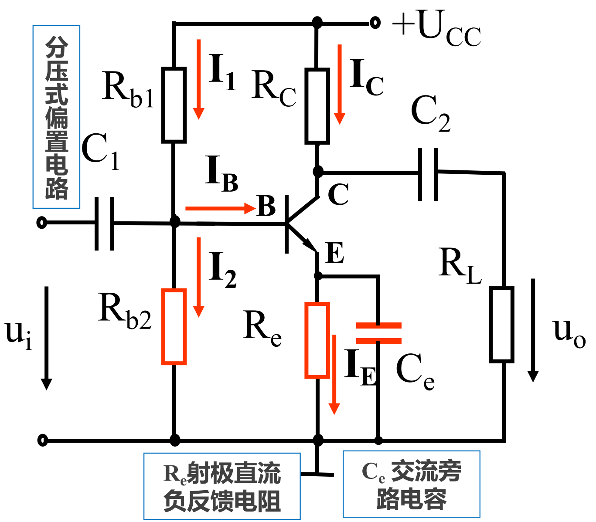
图｜分压偏置共射电路及射极旁路电容。 取自 共射课件第49页。 建立基极偏置， 提供直流反馈， 并联在 两端：直流开路，中频充分旁路时交流近似短路。原图 、 分别对应正文同名电源与 。
原因／背景。 固定偏置的 对 β 和 敏感，温度还会改变漏电等参数，因此 Q 点漂移，可能减少一侧输出余量甚至引起失真。温度讨论必须说清固定量：给定电流下所需 随温升通常下降，不等于固定 时电流下降。
组成与稳偏原理。 接 —B， 接 B—地， 接 E—地， 接 —C。分压支路使 相对稳定， 将发射极电流的变化变成反向调节 的电压变化。
若温度扰动本来要使 增加，在 近似不变的比较下：
末端是“抑制原有增加”，不是断言最终电流一定低于扰动前。电路重新平衡，Q 点通常仍有残余变化。反馈压降实际取自 ；正常放大、β 较大时 ，所以它有效稳定所关注的集电极电流。
设计与条件。 分压不是无条件的理想电压源。把分压支路等效为 后，负载关系是
- 分压支路电流比 大，可减小 B 端加载；教材／课件给的倍数是设计经验，并非任何电流、温度和误差目标下都充分的定理。
- 做 Q 点电流近似时，更直接的判据是 ，并要求 ；否则宜用 含加载的估算式。只看 的百分比误差，可能低估 的相对误差。
- 提供反馈，但它消耗直流电压余量；交流时若不旁路，也减小电压增益。不能简单认为越大越好。
- 较小可使分压更硬，却增加静态耗电并降低输入电阻。设计要同时照顾稳偏、摆幅、输入负担和功耗。
- 加在 上的旁路电容对直流开路，可保留直流稳偏；中频交流近似短路时减弱交流反馈、提高增益。见 II.7。
依据：课本照片15—17，印刷页78—80、共射课件第46—52页。戴维南表达及误差判据为 AI 补充推导。

二、我的对应理解
我的原始理解｜hand2-4b｜手写部分2/4.jpg

接下来将介绍另一种——分压式电流负反馈偏置放大电路。
1．原因 / 背景。2．原理。3．分析与计算。4．设计与条件。
1．目的很简单，为了保证静态工作点 Q 的稳定。Q 不稳定则整个放大电路的工作也不稳定。
而影响 Q 的最主要因素是温度。：，，；同 下对应的 均 ↑。
而为了维持 Q 点稳定，抵消该温度性的影响，其中一个方法就是设计电路，实现负反馈功能以求维稳，便有了该电路。
2．分压式电流负反馈偏置放大电路。
分压：增加了 ，使得 地组成分压网络，保证 稳定（近似不变）。
负反馈：增加了 所导致的。
原图对照｜我的手写记录（未作技术改图）
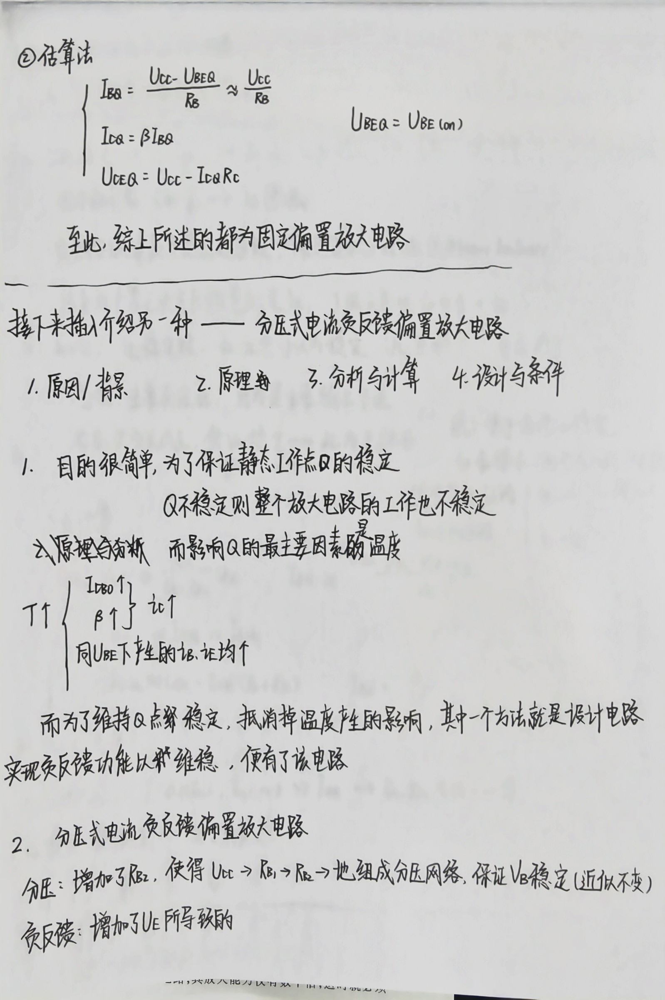
图中文字与箭头以原始记录保留；它们不自动代表已核准的知识结论。
我的原始理解｜hand2-5a｜手写部分2/5.jpg

下面梳理原理与负反馈链条：
由于 不变， 降低。
负反馈的本质不是回到原处，而是使减小扰动，达到 new balance。
该系统中真正决定反馈量的是 ，T 既会影响 也会～，， 稳定时， 也可认为稳定， 也稳定，系统稳定。
当然，主要关注 ，因为是主要输出电流。
而 使分压成立，使 稳定 → 此为压舱石。
[蓝笔注] 由于为使 稳定， 会很小（这也保证了分压的建立），故可近似认为（分析电路时），。
AI 整理｜原稿顺序提示：这一段原本写在 Q 点计算 之后；归入本模块的“设计与条件”，不改变引文内部顺序。
我的原始理解｜hand2-5b-design｜手写部分2/5.jpg
4．设计与条件。
① 保证分压：（流过 ），（～） 选适当小～值。
② 保证负反馈强度： 足够大。经验公式：～。[原稿未继续填写。]
三、校正说明与待核对
我的原始推论·保留记录：“ 稳定时， 也可认为稳定， 也稳定，系统稳定。”蓝注又由“为使 稳定”推出“ 会很小”，继而“，”。
需要修正及原因： 只固定了和，不能证明两项各自不变；温度改变 β 时，它们的分配仍会变，维持相近电流所需的 也会变。“稳定”应理解为扰动影响减小，不是所有量绝对不变。忽略 对分压支路的加载，是某一步近似；不能把实际晶体管基极电流置零，又在同一放大模型中要求非零 。正确做法是先说明忽略哪项影响，再按需要恢复 。
“负反馈：增加了 所导致的”一语究竟指增加元件、存在发射极电位还是电位变化，原意仍待确认；主体已明确物理机制为 将电流扰动反馈成电压变化，不声称替原稿补出了当时的文字意图。原稿经验公式留空，也不反填为本人曾写的数值。
回查手写2/4背景与框架；2/5反馈、新平衡、压舱石与原推论；设计原话。
6. 直流分析方法
一、主体知识内容｜教材／课件整理
本模块按基本、进阶两支求静态工作点。静态分析先求“台子怎样搭好”，交流分析再求信号围绕它怎样变化。
| 分析 | 通路与模型 | 主要目标 |
|---|---|---|
| 直流 | 稳态电容开路，保留直流电源，使用直流晶体管模型 | ，并验证工作状态。 |
| 中频小信号交流 | 耦合、旁路电容在条件满足时近似短路；独立直流源作增量置零，BJT 换小信号模型 | 及源到负载的传输。具体计算见 第7项。 |
画通路的关键。 DC 时 开路，隔开的信号源和负载不参与 Q 点；旁路电容也开路，所以 仍在。AC 时，理想直流电压源的增量置零后等效为短路；其两端成为同一个交流节点，若一端接地，另一端即为交流地。理想电压源本身没有需要另行保留的内阻；只有实际电源模型中原已包含的内阻或内阻抗，才按原模型保留。独立源置零不等于受控源置零。通路画法不能靠“所有电容总是短路”或“所有电源总是去掉”来记。
依据：课本照片11—12，印刷页74—75、共射课件第34—41页。

二、我的对应理解
我的原始理解｜hand2-3a｜手写部分2/3.jpg

3．电路分析。交流通路与直流通路。
直流通路。定义：在直流电源作用下，直流电流流经的路径。[“交流”的“交”在原稿被改为“直”。]
只有直流的工作状态，称为静态，对直流量的分析计算，称为静态分析。即求：。画法：～。
交流通路。定义：在输入信号作用下交流信号流经的路径。
只对交流信号及其响应分析，称为动态分析。目的是计算放大电路的性能参数： 等。画法：～。
基本电路
一、主体知识内容｜教材／课件整理
图解法：器件特性与外电路约束的交点。 对 E 接地的双电源固定偏置电路，输入回路满足
在输入特性 — 图上画直线 ；它与指定 下输入特性的交点给出 。实际初算常先选放大区代表性输入曲线，随后结合输出结果检查所选条件。
输出回路满足
在输出特性 — 图中，直流负载线连接 与 ；与 的特性曲线相交得 Q 点。横、纵轴先写清，负载线斜率为 。图解法能直接显示所处工作区，精度依赖曲线与读图。
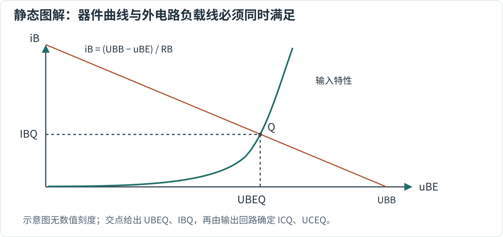
图｜输入特性与输入负载线的交点。 AI 绘制，无数值标定。曲线是器件约束，直线是输入回路约束；Q 点同时满足两者。输出侧还需使用 ，见下面两种负载线的区别。

图｜直流负载线、交流负载线与 Q 点。 沿用工作区已有 AI 示意图。适用于 E 交流接地、负载经电容耦合的共射电路；直流线斜率由 决定，交流线经过同一 Q 点、斜率由 决定。先只看直流线；交流线在 II.7 使用。
估算法：采用分段模型直接计算。 在 BE 取题设恒压降、假定放大区、忽略漏电时：
这是与图解法并列的计算方式；结论的简化来自所用器件模型。若 接同一 ，令 。只有 且误差允许时，才进一步取 。
状态校验不可省。 检查 、、。若放大假设不成立，就改用对应分段模型；饱和时由外电路与题给饱和压降求电流，不能把算出的负 当成有效放大工作点。
AI 例题｜固定偏置及状态校验。 单电源 ，，，，取 ：
E 为0，B 约0.7 V，C 约4.79 V，放大区假设相容。若只把 改为 ，同一放大假设会算出 、，明显不相容。若题目给饱和模型 、，则外电路给 、；受迫电流比约35.1，不能再强设为100。
依据：课本照片13—14，印刷页76—77、共射课件第45、53、72—75页。例题由 AI 自拟，不冒充原教材例题。

二、我的对应理解
我的原始理解｜hand2-3b｜手写部分2/3.jpg
直流分析方法 / 静态分析。（电路图反映的是电路特性，与实物图不同。）
① 图解分析法。一个元件在电路中，其 与 是同时由外电路情况和元件本身特性共同决定的。即：既满足元件特征曲线，也满足电路方程曲线。[“电路”前补“外”。]
交点即为目前状态。此即为该法的思路、原理。
BJT 分为输入特性和输出特性，放大电路可分为输入回路与输出回路。那么，自然的：输入回路与输入特征 → ；输出回路与输出特征 → 。
我的原始理解｜hand2-4a｜手写部分2/4.jpg
② 估算法。
。
至此，综上所述的都为固定偏置放大电路。
进阶电路
一、主体知识内容｜教材／课件整理；含加载式为 AI 补充推导
含基极加载的恒压降估算式。 对 第5项 的分压偏置电路，先将 对 B 端作戴维南等效，得到 。假定放大区且忽略漏电：
这套式子保留了基极对分压网络的加载，但仍是恒压降、固定直流 β 等假设下的估算，不是精确器件解。最后检查 及功耗。
分压足够硬时的快捷式。 若 ，可以依次取
这里有三个不同近似：忽略分压加载、恒 、；不能合并成一句“基极电流为零”。在上述恒压降模型内，快捷 相对含加载值的偏大比例恰为 ，可直接判断误差是否允许。
AI 贯通例题·第一步：Q 点。 取 ，，，，，，。信号与负载均经电容耦合。
因此 ，；，，，故
放大区条件相容，管耗约 ，还须与所用器件的额定值比较。若忽略分压加载，，比含加载结果高约8.16%；这不是算式互相矛盾，而是近似精度不同。后续 交流参数继续使用含加载的 Q 点。
依据：课本照片16—17，印刷页79—80、共射课件第49—52页。

二、我的对应理解
我的原始理解｜hand2-5b-calculation｜手写部分2/5.jpg
3．Q 点计算。
AI 整理｜原稿后续：这组计算之后原稿返回 第5项的设计条件原话。前面的戴维南一般式属于新增主体知识，不作为当时的思考起点。
7. 共射极电路交流分析方法
一、主体知识内容｜教材／课件整理
本项保持结构图中的三部分：小信号模型分析（基本、进阶、有旁路的进阶）—动态图解—波形失真。前者求 Q 点附近的线性传输，后两者帮助判断较大信号与摆幅；不能用小信号公式包办所有失真分析。
小信号模型：先统一连接与记号。 已知 Q 点并求得 ；设 为交流 B 端偏置电阻：基本电路取 ，分压电路取 。令
在中频、忽略 与反向传输的简化模型下，结论为
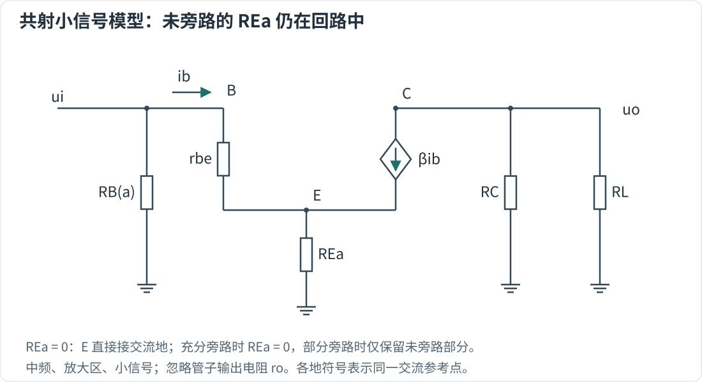
图｜共射电路的统一小信号等效图。 AI 绘制，与本节 、 的定义一致。 与 对交流并联；E 支路只留下未被旁路的电阻。由图分别写 B—E 电压关系与 C 节点关系，再求增益和输入电阻。
推导的关键中间步：基极支路电流为 ，发射极增量电流为 ，所以
相除得增益；输入端看到的是偏置支路与管子支路并联；求输出电阻时，去负载、输入源置零，简化单向模型中控制量为零，故留下 。这是受控源控制量计算后的结果，不是预先把受控源随手删除。
三种电路如何代入。
| 电路 | 主要结果 | ||
|---|---|---|---|
| 基本固定偏置，E 直接接地 | 0 | ，。 | |
| 分压偏置，无射极旁路电容 | 发射极随输入变化形成交流负反馈，增益减小、管子支路输入电阻增大。 | ||
| 分压偏置， 被充分旁路 | 0 | 增益恢复为 ；直流 Q 点仍由完整 决定。 |
部分旁路时，只把未被旁路的那一段代入 。若 且 β 较大，；这是反馈较强时对 β 变化较不敏感的近似，不是所有分压电路都能直接使用。

图｜有射极旁路电容的分压电路：部分旁路示例。 沿用工作区已有 AI 示意图。此图 拆为 ， 只跨接 ：直流计算保留两者，中频交流保留 。它与前面 单个 被充分旁路的图 是不同连接，不可混用。
AI 补充｜条件不能混用。 用于有负载的增益，求 必须移除 。如果保留有限管子 ，E 交流接地时有 ；E 上有未旁路电阻时存在反馈，不能把这个式子不加分析地照搬。更精细的结果留到确需该模型的题目，不在此堆叠新模型。
AI 贯通例题·第二步：比较旁路。 接 前例Q点，再给 ，，，，，忽略 。
| 中频情况 | ||||
|---|---|---|---|---|
| 无 ， | ||||
| 充分旁路， |
两者直流 Q 点相同，区别在交流反馈。旁路后电压增益增大，但输入电阻下降，源内阻的衰减也增加。若给的是实际端口输入 ，充分旁路时 ；若给 ，输出应改用 ，不是同一个数。
依据：课本照片18—23，印刷页81—86、共射课件第55—69页。

图示回查：同一 Q 点上的直流线与交流线。将该图与下面总量式对应：沿交流线移动的是瞬时工作点，不是重求另一条直流偏置线。
动态图解：交流负载线通过 Q 点。 对 E 交流接地、负载电容耦合的情况，输出增量关系为 ，换回总量得
所以在 — 图中，交流负载线过 Q，斜率 ；直流负载线则按直流通路确定，两者都通过 Q，但一般斜率不同。负载经电容接入时，它可以改变交流摆幅而不改变 Q 点。
给出输入波形后，可按输入特性得到各时刻 ，选对应输出曲线，与交流负载线求交得 ；最后去掉直流分量、按输出端口画信号波形。图解使用实际非线性曲线，不要求全程采用固定小信号斜率。
AI 补充｜未旁路 的边界。 在仍可采用固定电流比的范围，，故
这时 不等于 。不能对所有 CE 电路都直接用 作 负载线的等效电阻；进入饱和后固定电流比也不再精确。
波形失真与输出余量。 对正电源 NPN、集电极输出的共射电路，输入过负使管子趋于截止，输出向上受限；输入过正使其趋于饱和，输出向下受限。
| 原因 | 的变化 | 集电极电压／输出波形 | 常见调整 |
|---|---|---|---|
| Q 点电流偏小或负向驱动过大 | 降到近零，不能再下降 | 输出上侧削顶：截止失真 | 合理增大静态电流或减小输入，再复核另一侧余量。 |
| Q 点电流偏大或正向驱动过大 | 进入饱和，固定 β 失效 | 输出下侧削顶：饱和失真 | 合理降低静态电流或减小输入，再复核另一侧余量。 |
| 即使没削顶，信号仍过大 | 指数特性使局部斜率变化 | 波形仍可能有非线性失真 | 减小信号、保留适当交流负反馈。 |
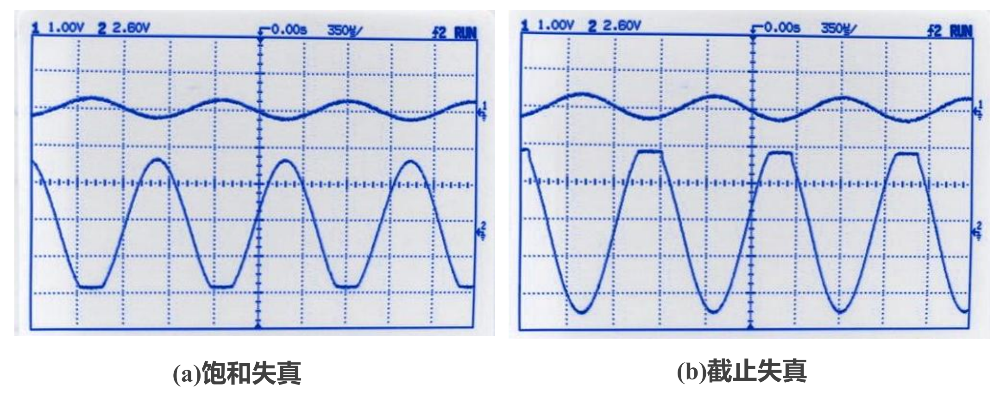
图｜共射的饱和削底与截止削顶。 取自 共射课件第87页。两幅图均以上方小波形为输入、下方大波形为输出；左侧饱和限制输出负向摆幅，右侧截止限制输出正向摆幅。这里只用于辨认波形方向，不从截图反推本版例题数值。
常用摆幅估算。 E 交流接地，用截止 与题给饱和压降估算两侧削顶边界时：
这里 是输出峰值；正弦有效值再除以 ，峰峰值再乘2。教材常称其“最大不失真幅度”，应理解为分段模型中的不削顶估算；严格的小非线性失真要求更小信号，BC 零偏的放大区边界也不等于所取深饱和压降。
AI 贯通例题·第三步：查哪边先受限。 前例充分旁路时，；若取 ，另一侧约 ，所以截止侧先受限。 看起来并不很低，仍可能因交流负载较重而由截止侧限制。
适用条件与注意事项｜AI 补充：若 E 未交流接地，向下的集电极输出余量还要扣除 E 电位随电流的上升；不能直接把 全算成 。另外，“Q 点在电源一半”只对特定负载与模型近似成立，通常应按交流负载线比较两侧余量。本节不给跨越饱和区的精细通式，避免把固定 β 外推成精确大信号结果。
依据：课本照片23—25，印刷页86—88、共射课件第71、76—90页。课本照片未提供印刷页89—90的完整正文，这部分失真内容以实际共射课件相应页核对补齐。

二、我的对应理解
本模块手写没有完整个人推导；结构图明确列出三类小信号电路、动态图解与失真，失真旁的个人记录是“具体内容我还没看”。保留该学习状态，不将本次补写的计算过程冒充为原来的理解。
可以回看原有连接：RC转换电压的直觉、“搭戏台”、静动态分析目标。这些是已记录内容的回链，不代表原稿已完成本项全部论证。回查结构项目与记录状态。
8. 放大电路分析的一般步骤
一、主体知识内容｜教材／课件整理
整道题先定直流状态，再分析增量，最后回到实际信号检验条件；不能先套增益式再默认放大状态成立。
- 识别连接与端口：指出组态、输入输出参考方向、电源、偏置支路、耦合／旁路电容；确认题目要 还是 ，给的是峰值还是有效值。
- 画 DC 通路：电容开路，去掉被隔开的信号与负载；保留真实直流电阻和电源。固定偏置或分压偏置各用对应方程。
- 求 Q 点并验区：先作有条件的放大假设，求 ；检查结偏置、余量及功耗。不成立就换状态模型。
- 定小信号参数：由 Q 点求 或 ；明确直流 β 与交流 β 的取值、是否忽略 。
- 画 AC 等效图：按频率判断电容处理，独立直流源增量置零，保留源内阻；用模型换管子，认清公共端。
- 求端口指标：列必要 KCL／KVL 求 ；需要源增益时计入 分压，需要电流／功率增益时按端口定义换算。
- 写实际输出并复核：带符号写波形或幅度相位，检查小信号条件、截止／饱和余量、负载与单位。不要把最大削顶摆幅等同于小非线性失真的保证。
AI 补充｜做题后的三问：这个 应参与直流还是交流？这个电压是总量、增量还是信号源电压？这一步近似的误差是否可接受？这三问分别能查出 Q 点、增益与模型使用上的常见错位。
依据：课本照片26，印刷页91，§3.6、共射课件第40—41页。前后验区、端口与精度检查由 AI 整理补足。

二、我的对应理解
手写没有独立的一般流程。已有局部方法是 图解交点、分压Q点顺序 和 静动态角色。上面七步是本次归纳的主体方法，不声称是我原来已形成的统一步骤。回查记录状态。
9. 共集电极放大电路
一、主体知识内容｜教材／课件整理
基本电路与用途。 输入加 B，输出取 E，C 接电源而成为交流公共端，称共集电路、射极输出器或电压跟随器。中频电阻负载、普通射极跟随电路中，电压增益为正且略小于1；其价值在电流／功率传输、较高输入电阻和较低输出电阻，可用于缓冲与驱动。
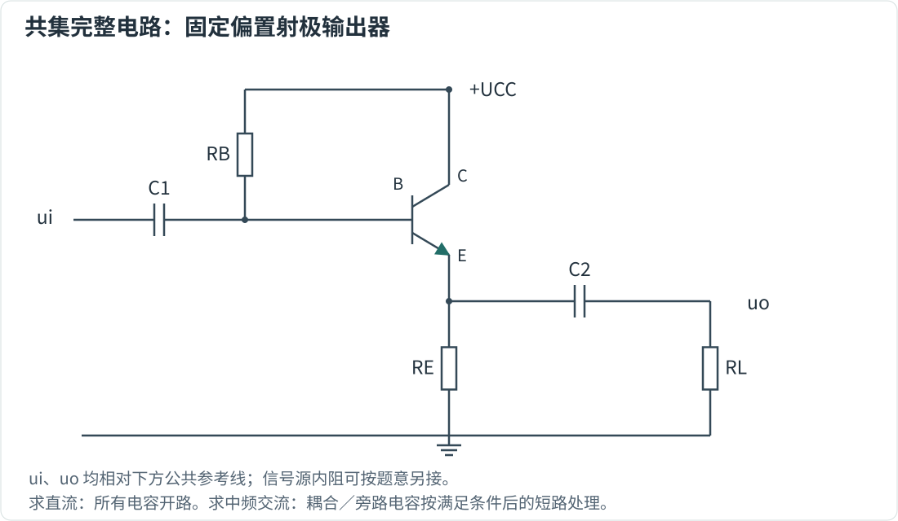
图｜共集的偏置、输入耦合和输出耦合。 AI 按本节固定偏置连接绘制。C 直接接 ，输出从 E 取出；求 Q 点时 开路， 不参与。下面另给中频信号通路，避免将交流图当成实际直流电路。
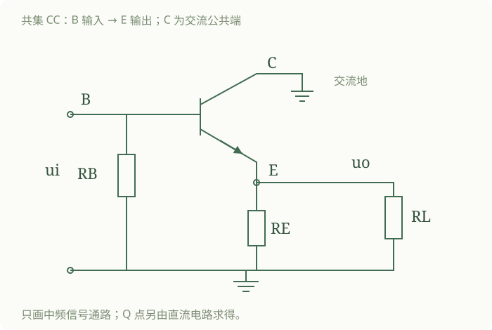
直流分析。 若 B 经 接 ，E 经 接地，C 直接接 ，耦合电容隔开源与负载，则
检验 。如果 B 采用分压偏置，则把分压网络替换成 ，使用 II.6进阶 的输入回路式；但输出 C 直接接电源，没有 这一项。
交流小信号分析。 以下在中频、放大区、忽略 的模型中，令 ， 为 B 端的交流偏置电阻。结论为
原因是 ，同时 。因此输出跟随输入，同相且略低；输入只需提供使 E 电位跟随变化所需的基极电流。若 ，才可进一步说 。
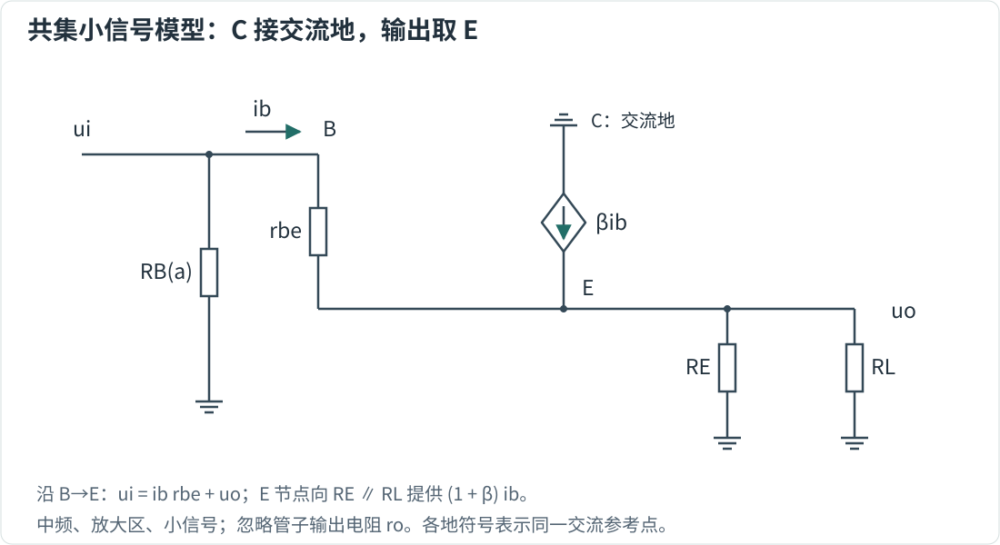
图｜共集小信号模型与 E 节点电流。 AI 绘制。B—E 间有 ，C 接交流地；受控源仍为 C→E 的 。源内阻未画入此端口模型，求源增益与 时按下文补回 。
输出电阻：保留输入端接条件。 去掉 ，使信号电压源置零，B 到交流地的等效电阻为 。从 E 看进管子支路，在同一简化模型中
AI 推导｜测试法的中间步：在 E 施加 ，有 ；流入管子的 E 端测试电流为 ，故管子支路电阻是上式，再与 并联。 未消失；只有理想零内阻驱动时才可取 。
AI 例题｜跟随并不等于没有用。 已给 、、、、，Q 点已验证且电容满足中频条件。则 ：
这里 包含偏置电阻， 不包含外负载。跟随器可使前级主要面对较大的输入电阻，同时由电源向后级负载提供电流；不能因电压增益小于1就否认它的电流／功率放大作用。
依据：课本照片26—29，印刷页91—94，§3.7、共集／共基课件第4—13页。

二、我的对应理解
这一模块没有独立展开的手写理解。能回接的是 三种端口改变而基本思想相通，不是上面完整的性能推导。手写1/8下半“共集极”题注有归属疑点，仍保留在 I.2⑦，不移过来充作本节的个人原理图。回查记录状态。
10. 共基极放大电路
一、主体知识内容｜教材／课件整理
基本电路。 输入加 E，输出取 C，B 为交流公共端。实际电路可通过分压给 B 建立直流偏置，再以基极旁路电容 使 B 近似交流接地； 不是把 E 接地的射极旁路电容，不能认错位置。
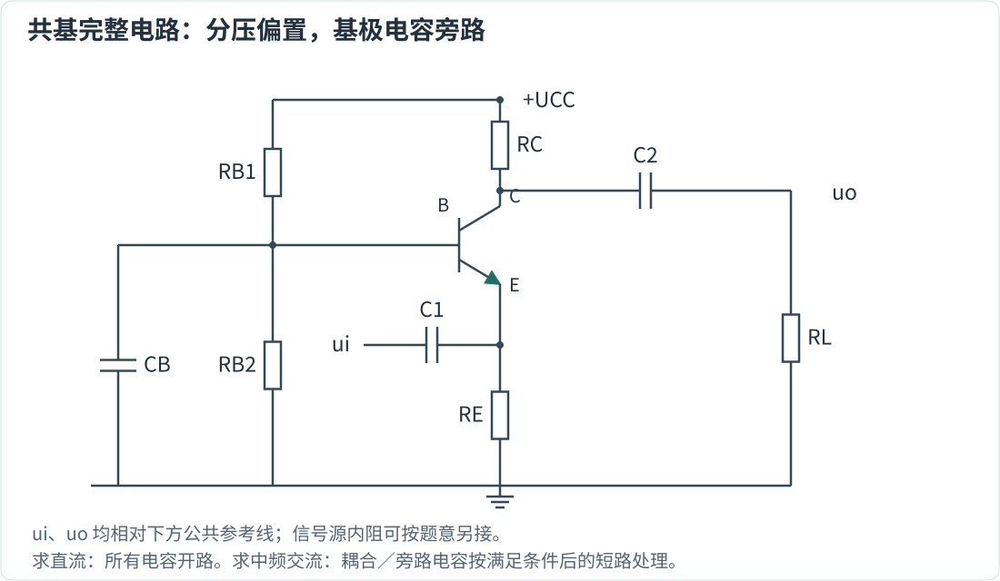
图｜共基的分压偏置、基极旁路和信号端口。 AI 按本节电容耦合、分压偏置连接绘制。 跨在 B 与地之间，输入经 加到 E；求直流时各电容开路，因此它的直流偏置网络可与分压式共射相同。

直流分析。 课本给出的电容耦合、分压偏置 CB 电路，在所有电容开路后，DC 通路与 II.6进阶 相同，仍由 求 Q 点。交流组态不同，不必然意味着直流通路不同；应按实际连接检查，而不能只看“共基”名称另套一组偏置式。
交流分析结论。 假定 B 充分交流接地，中频小信号，忽略 ，取 、，，则
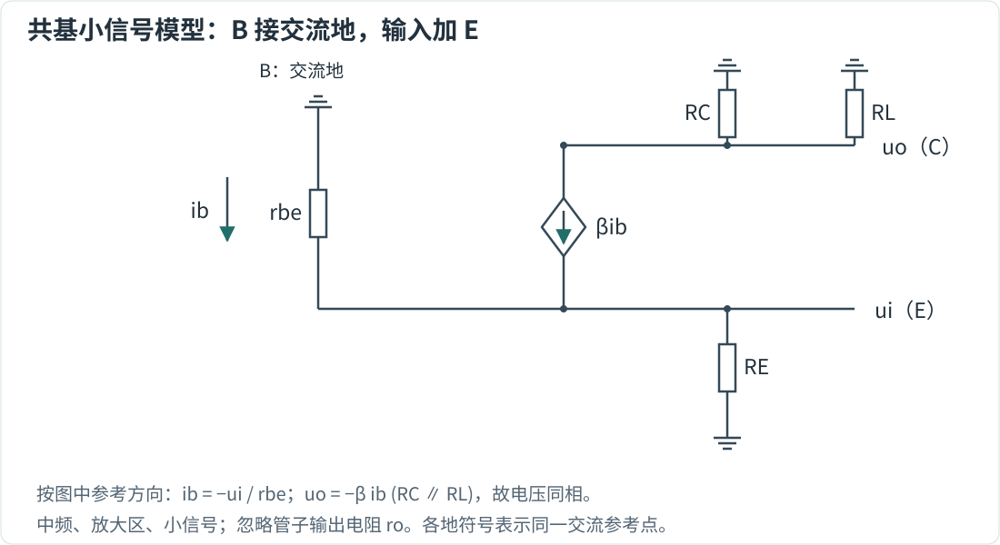
图｜共基小信号模型及电压符号。 AI 绘制。B 接交流地，E 是输入节点，所以 ；C→E 受控源的参考方向保持不变，不能为得到同相结论而另翻转箭头。
正号与小输入电阻的来源。 因 B 不随交流变化，，于是
输入 E 电位升高 → BE 正向电压减小 → 集电极电流减小 → 压降减小 → C 电位升高，所以同相。输入端流入晶体管的增量电流为 ，再加上 ，故得到上面的 。
电流与电压放大并不矛盾。 晶体管支路的电流传输幅度 ，但输入电阻很小、输出所接电阻较大，仍可有较大的电压增益。整个电路的负载电流增益还受 分流、 与 分流影响，不能不加端口条件就写成 α。若 较大，低 会使 显著小于 ，仍需 。
AI 补充｜不同模型的写法。 忽略基区体电阻时，，上式可写 。若保留 ，应使用完整 或对应内基极模型，不能把这两套近似无条件混用。这里精确到简化 H 模型的系数为 β，不是随手把 β 换成 。
AI 对照计算。 用 贯通例题 已求得的 、、、，若信号改从 E 输入、B 被充分旁路，则 ，。它与充分旁路 CE 的增益幅度相同，是这些模型与参数下的结果；实际源增益会因输入电阻不同而有明显差异。
依据：课本照片30—31，印刷页95—96，§3.8、共集／共基课件第16—21页。公式按课本端口方向复核。

二、我的对应理解
本模块没有独立的完整手写推导。相关个人片段是 共基端口、α 的分配关系 和 从电流变化到电压变化。这些是回查入口，不补写为“我原来已经由此推完共基性能”。回查记录状态。
11. 三种组态电路比较
一、主体知识内容｜教材／课件整理
以下比较采用正常放大区、中频小信号、忽略 的模型。CE 选 E 交流接地的形式，CC 选普通射极跟随器，CB 选 B 充分交流接地；不是把所有带反馈、特殊负载和不同 Q 点的实现都放进同一通则。
| 项目 | 共射 CE | 共集 CC | 共基 CB |
|---|---|---|---|
| 输入／输出／公共 | B／C／E | B／E／C | E／C／B |
| 端口电压增益 | |||
| 相位关系 | 反相 | 同相 | 同相 |
| 晶体管支路电流传输幅度 | 约 β | 约 | 约 α，小于1 |
| 输入电阻 | 管子支路约 ，再并偏置支路 | 管子支路约 ，通常较高，再并偏置支路 | ，通常较低 |
| 输出电阻 | 约 | 见 II.9，通常较低，受 影响 | 约 |
| 本章主要用途定位 | 获得较大的电压增益，常兼有电流放大能力 | 缓冲、阻抗变换、驱动负载 | 低输入电阻的同相电压放大；课本还指出其高频应用 |
这里 、；晶体管支路增益与整个电路的 不是同一项，完整 按 II.2端口定义 求。加入未旁路 的 CE 要改用 II.7一般式，输入电阻与增益都随之改变。
AI 补充｜做选择题或设计题时怎样看。 先判断要增强的是电压、传送电流还是隔离负载，再把源与负载接入模型。电压增益大而 太小，可能在接到实际 后失去优势； 接近1但 很小，可能更适合驱动。三个组态没有脱离端接与偏置条件的绝对优劣。
依据：课本照片31—32，印刷页96—97，§3.9及表3.9.1、共集／共基课件第22页。高频内容只保留用途定位，本版不展开超出当前主干的频率模型。

二、我的对应理解
我的原话中的比较认识：“这 3 种都为放大电路，只是放大的侧重对象（）不同。”
AI 整理｜记录边界：原稿没有完整比较表或逐指标推导。本表属于教材知识整理，不算作我原有的完整比较结论。完整原话已经保留于 三种连接方式。回查手写1/7页首。
校正与待核对索引｜AI 整理，辅助回查
下表对应原档案 T01—T17，记录本版处理结果。“技术条件已说明”不等于已经确认了模糊字迹或本人当时的意图；原始文字和完整疑点仍在 对应表。
| 原编号 | 本版处理与回查位置 | 剩余状态 |
|---|---|---|
| T01—T02 | 定义与结构：区与结分开；掺杂排序不作通用规律。 | 技术表述已校正，具体原排序所据结构不明。 |
| T03 | 工作状态：功能／状态与偏置条件分开。 | “外部条件”原意待本人确认。 |
| T04 | 内部原理：区／结用词、两类载流子、漏电归属及近似说明。 | 技术条件已说明。 |
| T05—T06 | 电流关系：限定电源影响、固定 β、独立电流；区分微变比、直流比与扣漏电定义。 | 技术条件已说明；α 范围字迹见 N01。 |
| T07 | 电压放大：区分带符号变化与幅度；下半图不冒充已核准组态。 | 原式是否仅指幅度、下图写作意图待本人确认。 |
| T08—T09 | 特性曲线：固定条件、基区调制、正偏／导通、临界与深饱和、绝对化措辞。 | 物理结论已校正； 的原稿含义、曲线单位仍未确定。 |
| T10 | 模型：补充恒压降、忽略漏电、局部线性化的条件。 | 技术条件已说明；原小信号推导未写，不虚构。 |
| T11 | 等效及参数：端口与测试法完整说明。 | “未懂”原旁注的指向仍待本人确认。 |
| T12 | 基本电路：限定偏置、电容作用；分开总量、增量、输出与负载。 | 技术条件已说明；静态末项字迹见 N03。 |
| T13 | 基本DC分析：电源接法、忽略压降与验区条件。 | 技术条件已说明。 |
| T14—T15 | 进阶原理：温度固定量、残余扰动、和稳定不推出各项不变、忽略加载不等于物理零基极电流。 | 技术推论已校正，原句作为学习记录保留。 |
| T16 | 进阶原理：明确 的反馈机制。 | “增加了 ”原意仍待确认。 |
| T17 | 设计条件、进阶DC：分别给加载、恒压降、电流近似及设计取舍。 | 标准分析已补足；原经验式未记录，不伪补为原话。 |
仍需本人确认的原文／归属
| 编号 | 原图入口 | 待确认内容 |
|---|---|---|
| N01 | 手写1/7 | α 常见范围的末位数字：【原文待核对】。 |
| N02 | 手写1/9 | 输入曲线纵轴电流单位：【原文待核对】；另有分段 的含义未定。 |
| N03 | 手写2/2 | 静态量列表末项及前方划改符号：【原文待核对】。 |
| N04 | 消息中的结构图2；对应表说明 | 第5项右侧蓝笔来源注语未逐字确认，不推造来源编号；不影响已确定的模块位置。 |
| N05 | 手写2/1 | “未懂”具体指 、 还是整个模型。 |
| N06 | 手写1/8 | 下半“共集极”题注与端口／α链的原写作意图；未直接改名归档。 |
这些待核对不影响本版已经按教材条件补足的主体知识。主教材的书名、版次仍未从照片可靠确定；引用按照片序号、可见印刷页及节号定位。现有资料的经验倍数、开启压降等近似口径不完全相同，本版保留其条件，不擅自认定某一口径就是考试唯一要求；课程若有指定取值，以题设和老师明确要求为准。
复习与自测入口｜AI 补充
- BE 正偏是否等于一定能作正常线性放大？——还要 BC 反偏、适当 Q 点与信号范围，见 I.2②—③。
- 为什么较大 不违背集电结反偏？——收集由 E 注入并通过 B 的载流子，见 I.2⑤。
- 为什么电容耦合的 改变增益却可不改变 Q 点？——它参与 AC 通路而被 DC 开路隔开，见 II.6、II.7。
- 加 后 Q 点、增益、输入电阻各怎样变？——直流稳偏保留，充分旁路时交流反馈减弱；按 贯通例题 自算核对。
- 是不是工作时的 ？——不是；去负载、置零独立输入源、保留受控源后测试，见 II.2。
- CC 不放大电压、CB 支路电流增益小于1，为什么仍有用？——分别看缓冲带载与低输入电阻下的电压传输，见 II.9、II.10。
资料依据与阅读边界
以下资料都已检查实际内容；“课件第几页”按工作区提取的 PPTX 幻灯片序号计，前两组与同名 PDF 的物理页序一致，不能替换成课件印刷章号。
本次新增配图保存在 配图/轻量版_v2/，课件图直接从已提供 PDF 的对应区域渲染，图下注明物理页序；AI 示意图另行标明。既有图与手写原图继续使用 web-notes/assets/analog。迁移本文时请一并保留这两个配图目录。课本照片与课件的项目内回查入口位于 tmp/analog；没有工作区副本的桌面资料保留名称并标记待核对，迁移时请一并保留已有资料目录。
- BJT 课件：所提供李会方课程资料包中的《02第二章-3-BJT-MOS三极管(0804)》，共106页。本版使用第5—16、28—43、94—104页的结构、原理、特性、参数、模型等；不展开其中的 MOS／JFET。工作区 实际课件3；《02第二章-3-BJT-MOS三极管(0804).pdf》【待核对：工作区暂无该资料副本，原记录为桌面路径】。
- 共射课件：《03第三章-1-放大器的基本概念+共射极（Ver.3）（0805）》，共91页。本版使用基本概念、端口指标、组成、DC／AC分析、稳偏、图解与失真。工作区 实际课件4；《03第三章-1-放大器的基本概念+共射极（Ver.3）（0805）.pdf》【待核对：工作区暂无该资料副本，原记录为桌面路径】。
- 共集／共基课件：《03第三章-2-共基极-共集电极-场效应管放大电路（Ver2.8）（0805）》，共58张幻灯片，使用第4—22张，不扩写自举、场效应管等后续内容。工作区 实际课件5。
- 课本照片：实际32张，书名版次未确认；按 照片1 至 照片32 定位。照片3、4为重复页；照片23、27、29保留原拍摄方向，可在看图工具中旋转。可见章节涵盖参数、温度、选型和3.2—3.9。印刷页89—90缺完整照片时，由实际共射课件补足失真分析，不伪称已经看过缺页。
- 个人材料：手写思路提取、手写笔记对应表、18张链接的原图；它们是个人理解来源。既有 72页原稿保留修订版用于对照原稿保留与来源边界，其不同目录不替代本次已确定结构，AI旧讲解不转成个人原话。
- 其他可用参考：《新概念模拟电路1》及华成英辅导书、第三方笔记等材料实际存在，但本版没有将未逐页核实的内容作为某条公式的专门出处，也不把第三方笔记归到本人手写。主体已有课本照片与对应课件可互核，未为增加参考数量扩展无关内容。
- 外部独立核验：仅用 MIT 6.012 Lecture 17核对正常放大区的注入／收集与电流方向约定；不替代用户教材，不将其另一套符号直接混入本文。
本版检查记录｜2026-10-22：保持26个二至四级标题及顺序，22个末级模块的主体在前、个人记录在后。本次将手写提取档案的30段原始引文完整放回相应模块，不再以 AI 摘要代替原话；7处另放手写原图对照。补齐器件结构、偏置、输运、曲线、模型、二端口、各组态电路、负载线及失真图，注明来源、近似条件与符号对应。原有校正和待确认事项保留。原始档案、图片及其他版本不变；本次有限修订另核验资源路径，澄清理想电压源置零与实际电源内阻的区别，并由同一 Markdown 导出 HTML、PDF；不提交或推送。